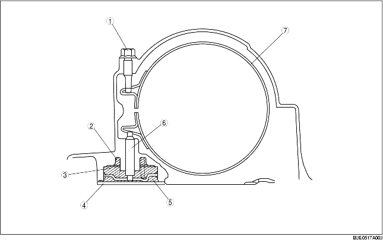

• Als er druk staat in de ruimte tussen de remzuiger en de vaste zuiger (werkzijde) drukt de zuigerstang tegen de remband, waardoor de band de remtrommel 2-4 vastklemt. Op hetzelfde moment werkt de drukveer extra tegen om een optimale bedieningskracht te verkrijgen.
Als er druk staat in de ruimte tussen de remzuiger en het transmissiehuis (ontlastzijde) wordt de zuiger teruggedrukt. Hierdoor lost de remband door zijn eigen veerkracht.
Als aan beide zijden van de remzuiger druk staat, wordt de zuiger door het verschil in oppervlak aan beide zijden in de richting van de vaste zuiger gedrukt en wordt de remband gelost.

.